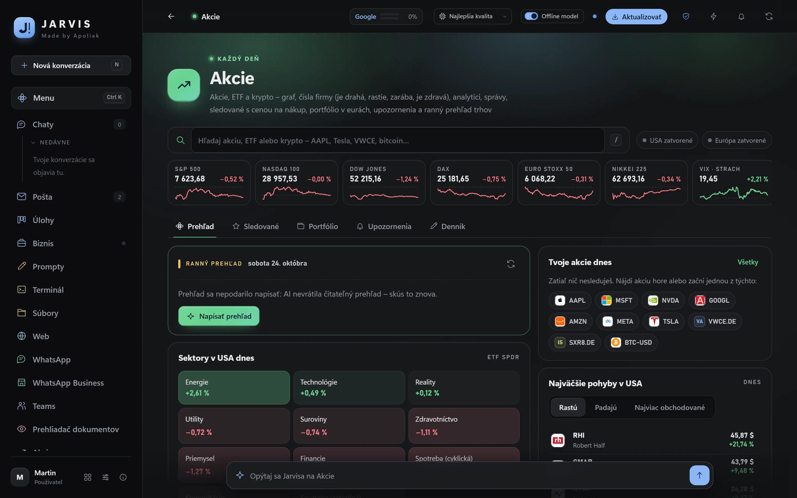
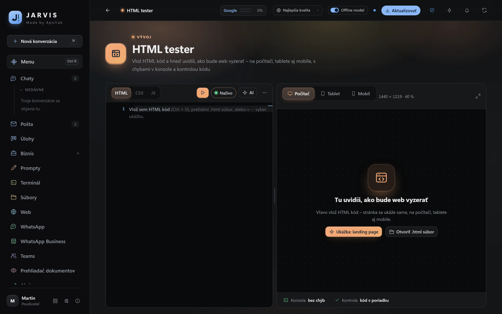
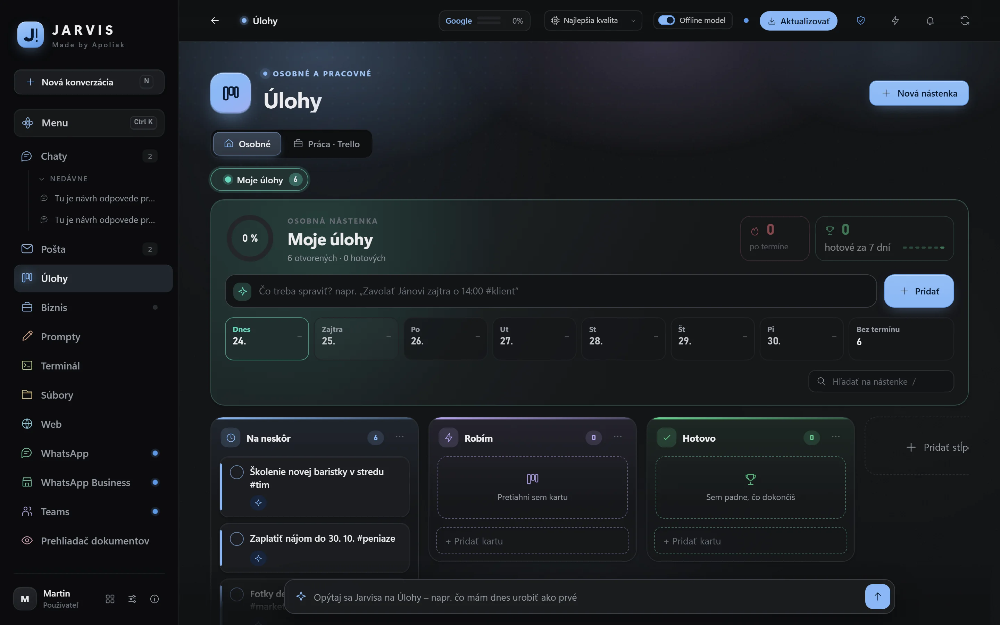
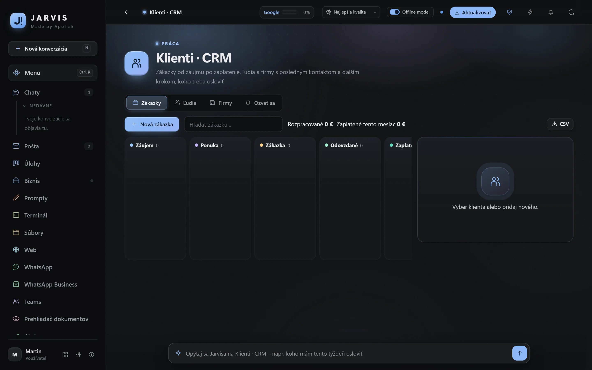
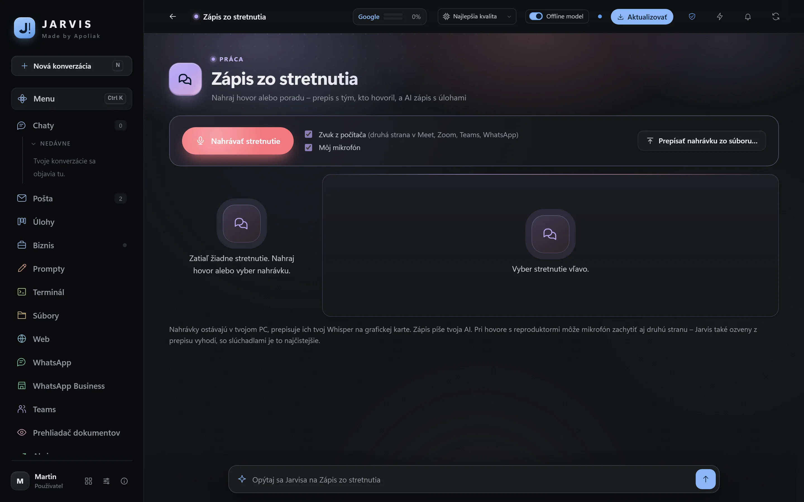
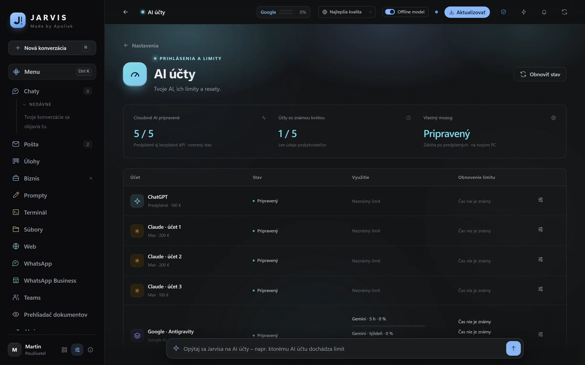

Vše, co Jarvis umí
Jarvis je jedna aplikace pro Windows, která propojí vaše AI, poštu, klienty a úkoly a přidá 73 aplikací pro každodenní práci. Všechny funkce jsou v každém plánu.
AI chat se všemi vašimi AI
ChatGPT, Claude i Gemini přes vaše předplatné v jednom okně, k tomu bezplatné AI služby a offline model. Jarvis sám zvolí model i hloubku odpovědi, a když jednomu účtu dojde limit, pokračuje další. Až 6 úkolů najednou v různých chatech.
Dělá práci na počítači
Čte a vytváří PDF, Word a Excel, spojuje a vyplňuje dokumenty, pracuje v prohlížeči s vašimi přihlášeními a ovládá okna programů. Před odesláním, platbou, nákupem nebo smazáním se vždy zeptá. Hesla nikdy nepíše.
Pošta s plným přístupem
Gmail i firemní schránky na jednom místě. „Projdi mi maily“ a máte shrnutí s odkazy, ke zprávě návrh odpovědi, který odešlete dvěma kliky. Nepodstatné a nedoručitelné e-maily uklidíte jedním tlačítkem.
Obchodník
Každých 15 minut přečte firemní schránky, zájemce zapíše do Klientů, připraví odpověď ve vašem stylu a připomene nabídku bez odpovědi i nezaplacenou práci. Nic neodejde samo.
Byznys a klienti
Tržby a výdaje po měsících, měsíční cíl, co čeká na zaplacení, stav vašich webů a certifikátů. Klienti od zájmu po zaplacení, cenové nabídky jako PDF a databáze firem z registru podle IČO.
Úkoly, kalendář a připomínky
Vlastní nástěnka jako Trello s termíny, štítky a opakováním, přidání úkolu větou „zítra v 9 zavolat dodavateli“. Kalendář se svátky a jmeninami, budík, časovač a připomínky.
Hlas a zápisy ze schůzek
Podržte klávesu a diktujte do libovolného okna – přepis běží offline na vaší grafické kartě. Nahrajte poradu nebo hovor a dostanete přepis s označením, kdo mluvil, a zápis s úkoly.
Automatizace
Naplánujte práci, kterou Jarvis udělá sám: každé ráno přehled pošty, v pátek faktury z pošty do Excelu, každé 4 hodiny kontrola webu. Když je potřeba váš souhlas, pošle upozornění a počká.
Jarvis v mobilu
Chat, pošta, úkoly a schvalování v telefonu přes soukromé šifrované spojení s vaším PC. Úkol z mobilu poběží na počítači až do konce, i když telefon zamknete.
Všechno v jednom okně
Prohlížeč s kartami a hesly, soubory s náhledy Wordu, Excelu a PDF, terminál, WhatsApp, Teams a Discord – z Jarvise nemusíte odcházet. Ctrl + K najde cokoli, Alt + S pořídí výstřižek obrazovky.
E-faktury připravené na rok 2027
Kontrola, zobrazení a vystavení e-faktur podle evropské normy EN 16931 a Peppol BIS 3.0, celé offline. E-fakturu z přílohy v poště zkontrolujete jedním klikem.
Soukromí a bezpečnost
Data jsou ve vašem počítači, hesla šifruje Windows a AI je nikdy nedostane. Antivir a VPN jedním klikem, Inkognito pošle firmám žádosti o výmaz vašich údajů podle GDPR.
Skutečné obrazovky Jarvise
Žádné ilustrace – tak Jarvis vypadá na vašem počítači (s ukázkovými údaji).
 Jarvis
Jarvis
Jarvis
Jarvis
Jarvis
Jarvis
Jarvis
73 aplikací, které nemusíte hledat
Běží přímo v Jarvisu, bez reklam a registrací, a AI se můžete zeptat, která z nich vám pomůže („která aplikace mi pomůže s fakturou?“).
Každý den 16
Práce 21
Vývoj 8
Počítač 9
Učení 6
Hry 13
Jarvis se o sebe stará sám
Aktualizace bez čekání
Nová verze se stáhne na pozadí a vymění se, když odejdete od počítače nebo Jarvise zavřete. Žádná modrá okna.
Kontrola po každé verzi
Po aktualizaci si Jarvis sám ověří poštu, AI účty i aplikace. Když něco nesedí, zapíše to a dá vědět.
Šifrovaná záloha
Data Jarvise lze zálohovat zašifrovaně, takže při výměně počítače o nic nepřijdete.
Jarvis pro vás i vaši firmu
Instalace 500 € jednou, poté od 15 € měsíčně. Nainstaluji ho, nastavím a starám se o něj.